地域の皆さまに寄り添う、身近な内科・消化器内科
「早めに気づき、安心して続けられる医療」を目指しています
やすなが内科クリニックは、福岡市早良区飯倉にある内科・消化器内科です。病気の早期発見に努め、丁寧な説明、必要に応じた専門医療機関との連携を通じて、患者さま一人ひとりに合った診療を心がけています。
当院の特徴
専門医による幅広い超音波検査
当院では、日本消化器病学会認定消化器病専門医が腹部領域（肝臓、胆のう、すい臓、腎臓など）の観察と診断を行っています。また、頸動脈や甲状腺疾患の評価のほか、泌尿器領域（膀胱、前立腺）、婦人科領域（子宮、卵巣）の検査にも対応しています。
【主な検査対象領域および症状】
- 腹部領域： 肝臓、胆嚢、すい臓、脾臓、腎臓
胃の不調、みぞおち・お腹の痛み、健診での肝機能異常など - 頸部・甲状腺： 頸動脈（血管の動脈硬化度）、甲状腺（腫瘍の有無など）
慢性的なだるさ、むくみ、動脈硬化チェック、脳卒中予防など - 泌尿器・婦人科領域： 膀胱、前立腺、子宮、卵巣
下腹部痛、頻尿、尿の違和感など
地域の基幹病院との連携体制と専門医療機関へのご紹介体制
当院では、地域の基幹病院や専門医療機関と連携し、患者さまの状態に応じた医療に繋げています。より詳しい検査や専門的な治療が必要と判断した場合には、地域の基幹病院や適切な専門医療機関をご紹介いたします。
主な連携先およびご紹介先：
- 福岡大学病院
- 福岡歯科大学医科歯科総合病院
- 福岡大学西新病院
- 国立病院機構 九州医療センター
- 浜の町病院
- 福岡記念病院
- 福岡白十字病院
- やました甲状腺病院
- 二田哲博クリニック
※上記以外の医療機関へのご紹介にも対応しています。
地域の健康を支える
健康診断・企業健診
当院では、特定健診をはじめ、地域の皆さまの健康診断や企業様の定期健康診断・雇入時健康診断にも対応しています。日本医師会認定産業医が、従業員さまの健康管理を丁寧にサポートいたします。
感染対策への取り組み
当院では、発熱や咳などの感染症状がある方も、定期通院や一般診療でお越しになる方も、すべての患者様の感染リスクをできる限り低減し、安心してお越しいただける環境づくりを大切にしています。そのため、診療時間を明確に分ける「時間分離診療」を実施するとともに、診察室・待合室・処置室には高性能空気清浄機を設置し、院内の空気環境にも配慮しています。
感染症の症状がある診療においては、お一人ずつの予約枠を確保してご案内し、来院されるすべての方が安心して受診いただけるよう配慮しています。
通いやすい通院環境
当院は、飯倉バス停前に位置し、レガネット飯倉店にも近いため、近隣にお住まいの方や周辺施設をご利用の方を中心にご来院いただいています。駐車場も敷地内に12台完備し、ご家族の送迎などお車でのご来院も便利です。お買い物ついでなど、ライフスタイルに合わせてご通院いただけます。
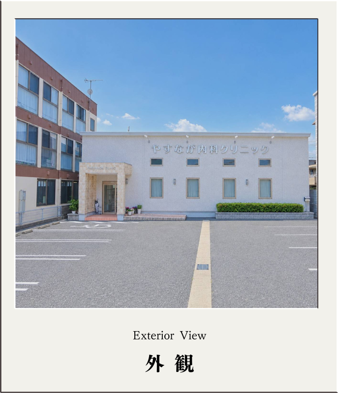

院内設備
高性能空気清浄機
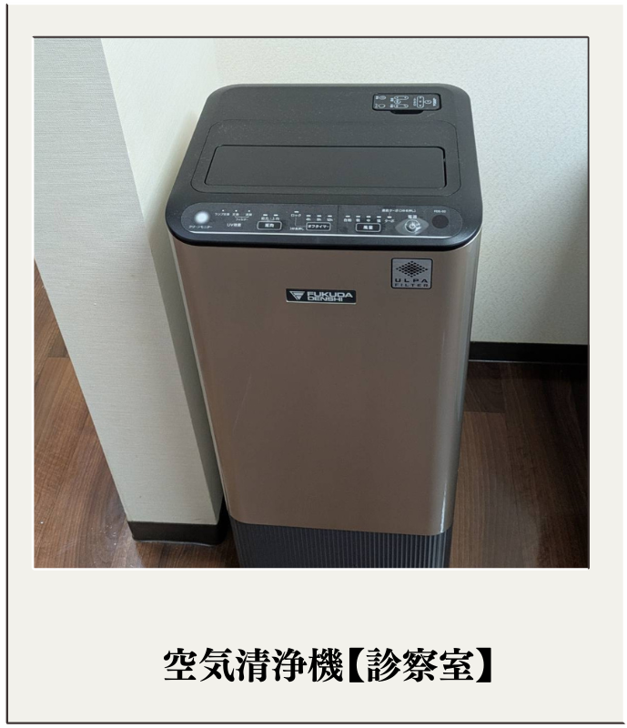
診察室（医療用空気清浄装置）：極めて微小な粒子を捕集するULPAフィルターを搭載した医療用空気清浄装置を設置しています。ウイルスや微粒子の捕集に対応し、診察室の空気環境の維持に配慮しています。
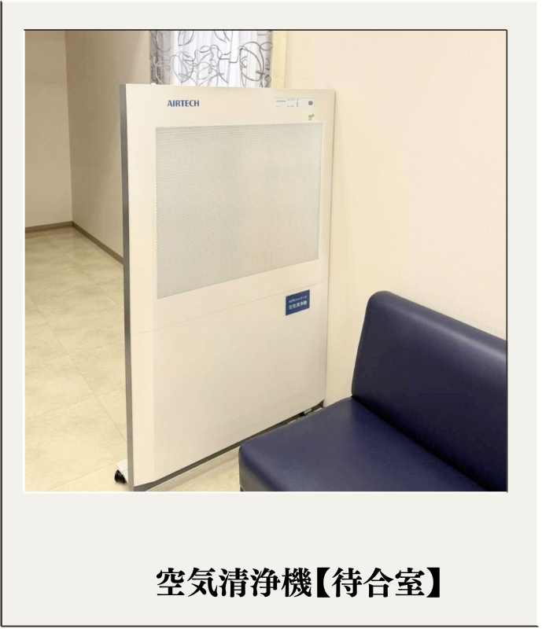
待合室（クリーンエアシステム）：HEPAフィルターを搭載した空気清浄ユニットを設置しています。クリーンルーム技術を応用したシステムにより、微粒子などの捕集に対応し、待合室の空気環境の維持に配慮しています。
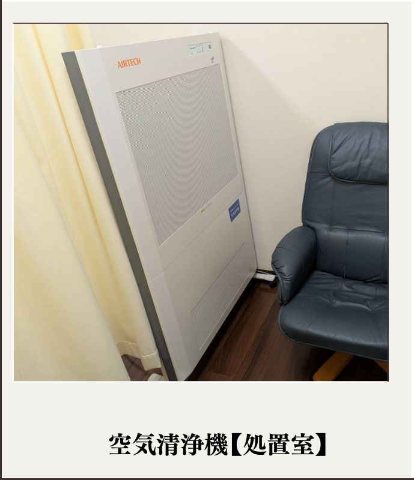
処置室（医療用エアクリーンシステム）：HEPAフィルターを搭載した感染対策用クリーンユニットを設置しています。微粒子などの捕集に対応し、処置室の空気環境の維持に配慮しています。
検査機器
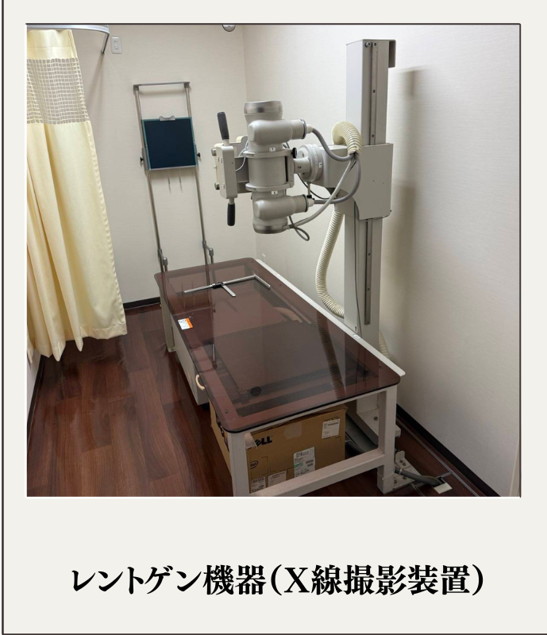
レントゲン機器（X線撮影装置）：肺の病気や心臓の拡大及び腹部の状態などを迅速に確認します。
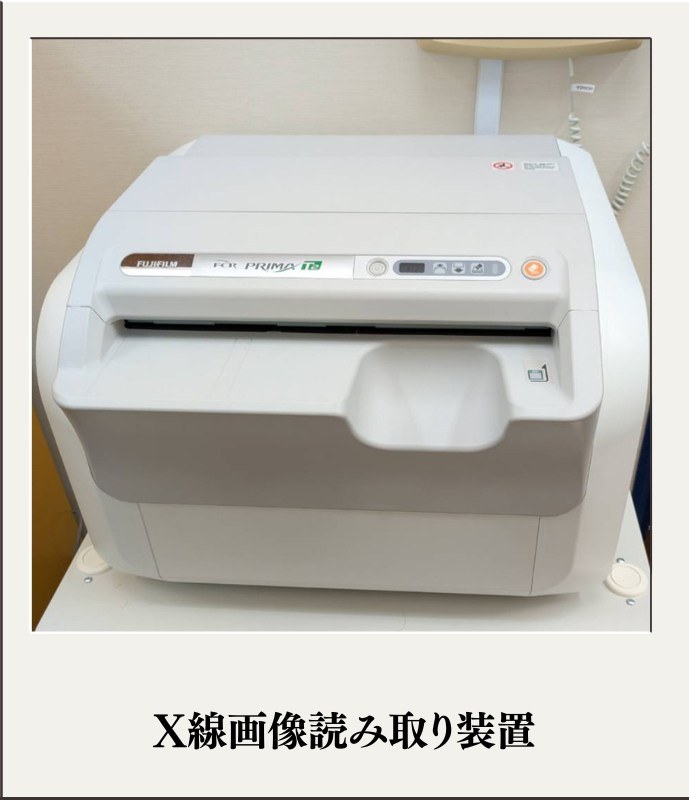
X線画像読み取り装置：撮影した画像を素早く高精細なデジタル画像へ変換します。鮮明な画像により精度の高い診断を行えるだけでなく、撮影後の待ち時間短縮にも繋がっています。
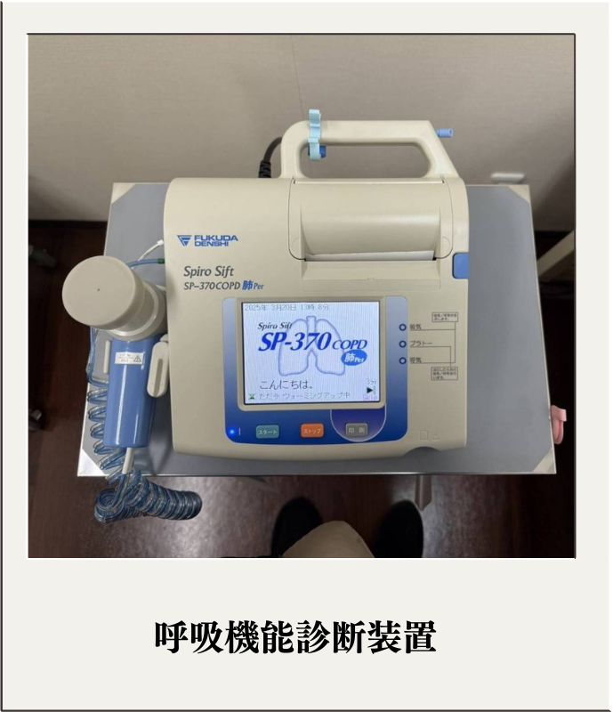
呼吸機能検査：息の強さや肺活量を測定し、喘息や息切れ、長引く原因を調べます。
経皮的動脈血酸素飽和度測定器：指先などにセンサーを挟み、血液中の酸素の状態を測定します。
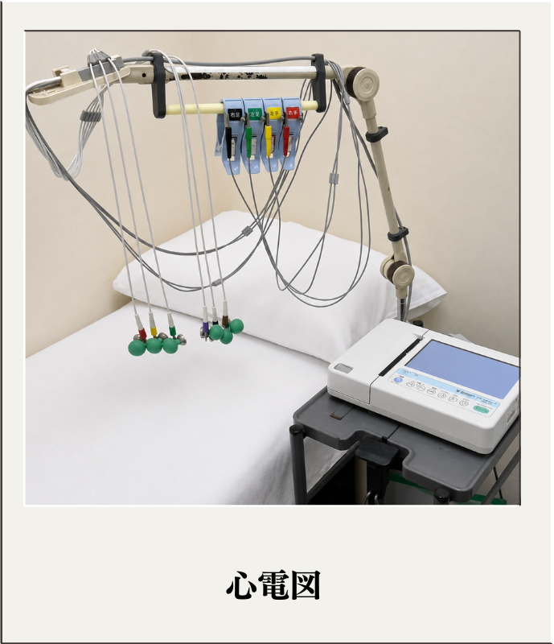
心電図：脈の乱れ（不整脈）や心筋の状態（狭心症や心筋梗塞の兆候など）を短時間で確認します。
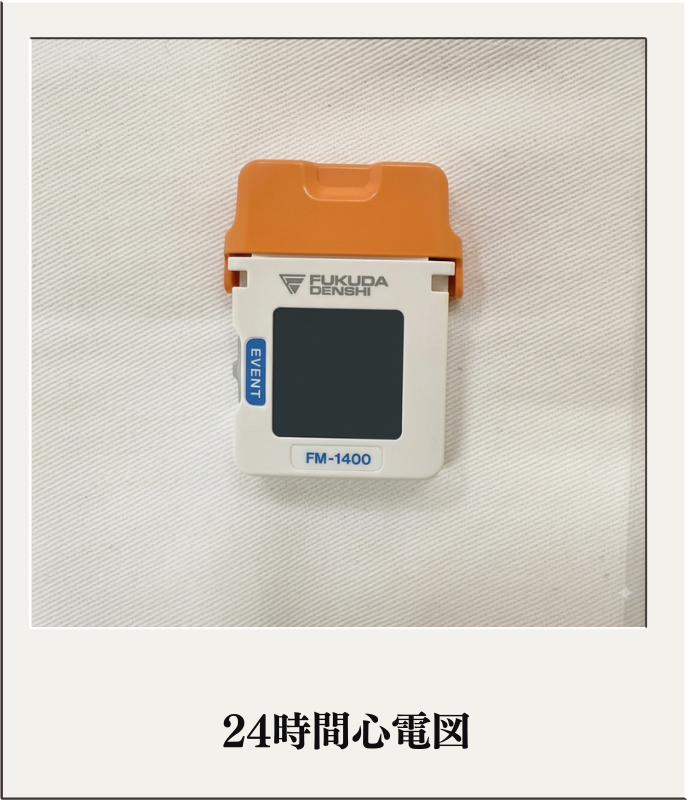
24時間心電図：小型で軽量な装置を装着し、日常生活を送りながら24時間の心電図を記録します。短時間の検査では捉えにくい、一時的な不整脈や症状を確認します。
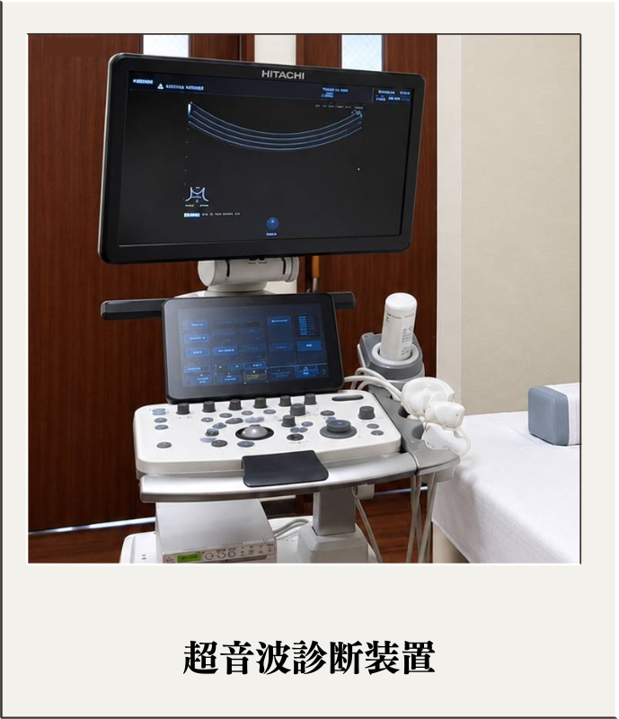
超音波診断装置（エコー）：体の表面から超音波をあて、腹部や血管の状態をリアルタイムで画像化します。放射線を使わないため、体への負担が少ない検査です。
施設のご紹介
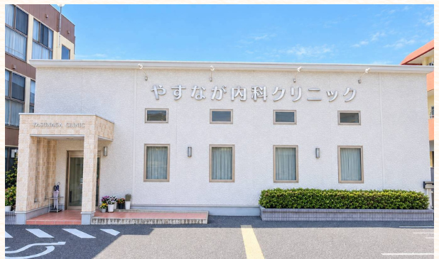
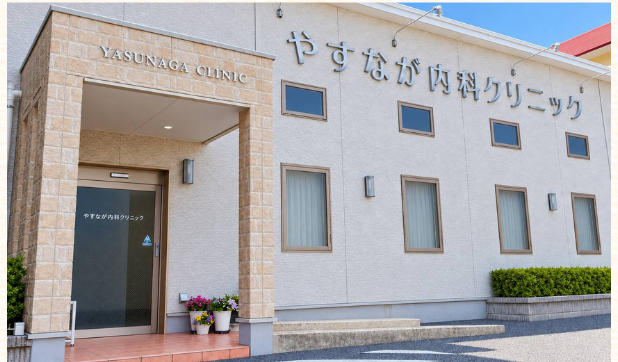

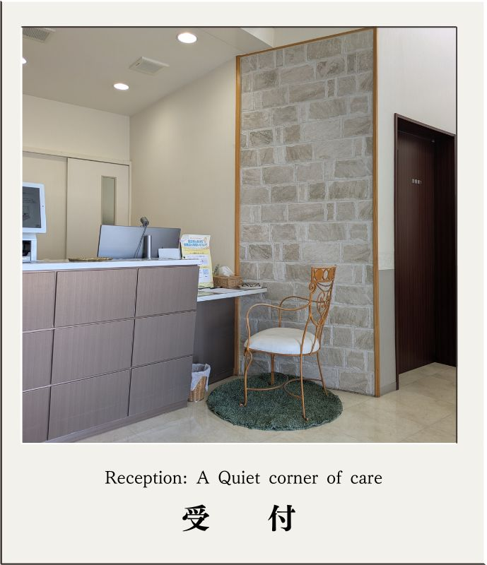
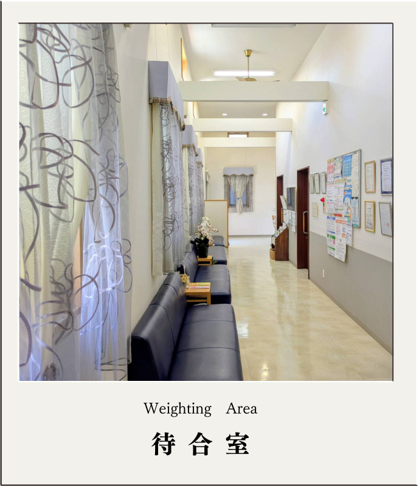
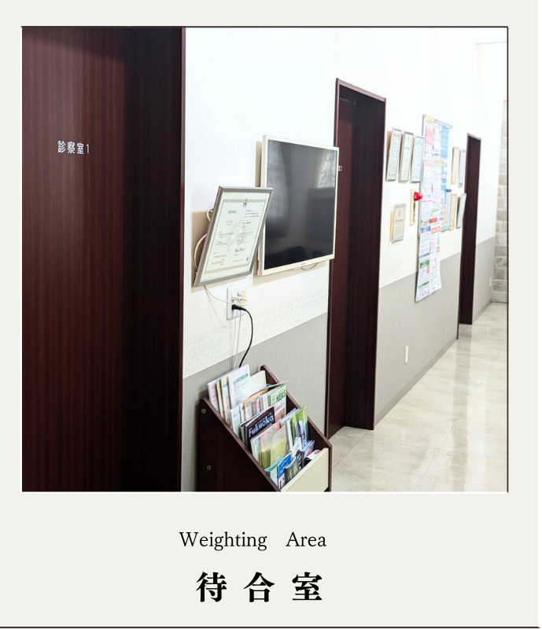
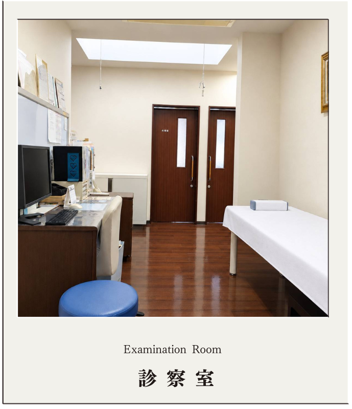
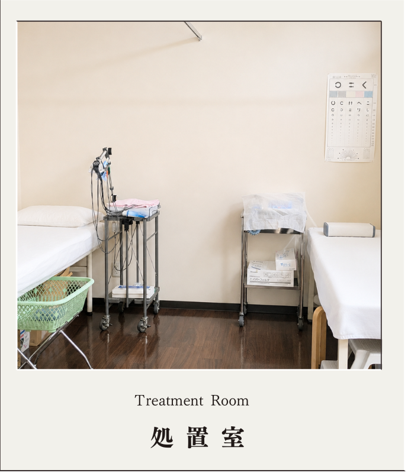
基本情報
住所
〒814-0161
福岡市早良区飯倉4丁目8-5-2
駐車場
12台完備（送迎スペースあり）
駐輪場
あり
交通機関（西鉄バス）
西新方面から：飯倉バス停前
野芥方面から：飯倉バス停より徒歩1分